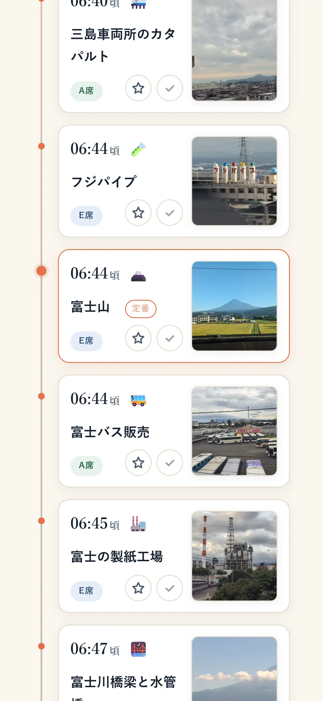
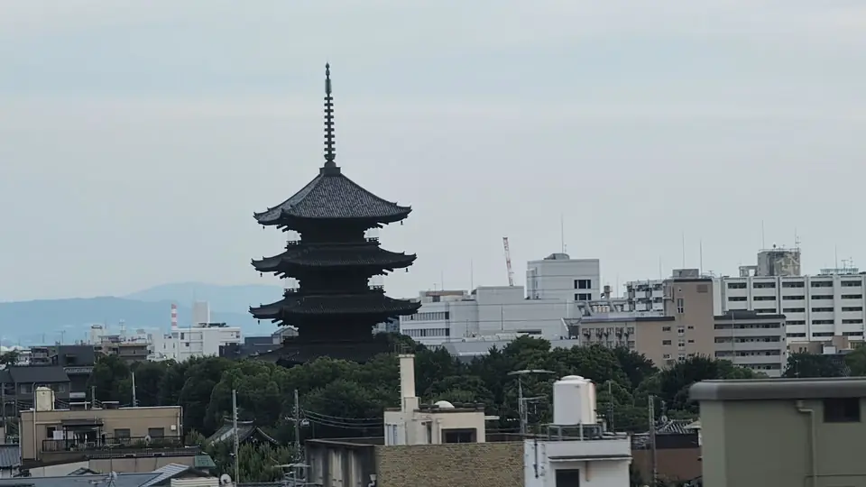
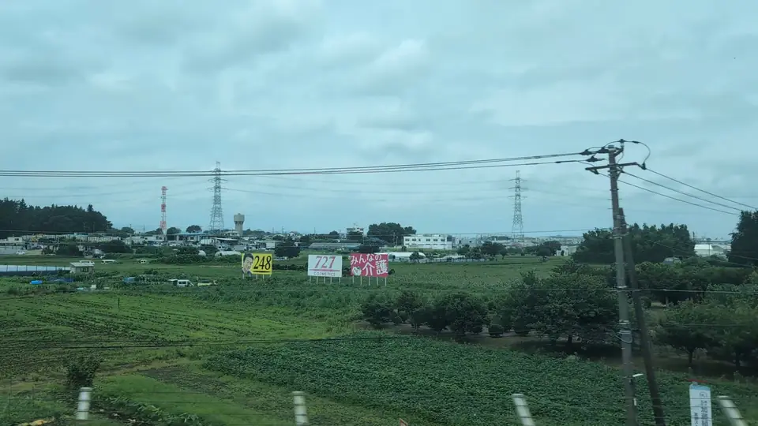
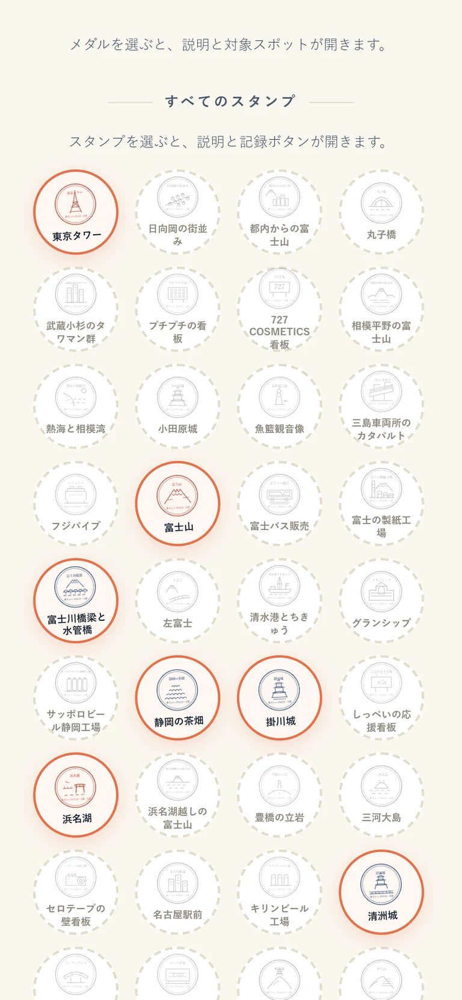

はじめての一本は、やっぱり富士山。
どちら側の席に座るか、東京から何分ごろ見えるか。乗る前に、ここだけ確認しておけば十分です。
富士山ガイドへTOKAIDO SHINKANSEN · TOKYO ⇄ SHIN-OSAKA
富士山も、城も、湖も、ふしぎな看板も。 知ると、いつもの車窓が変わって見える。

乗る便を選ぶと、富士山や城の見えるころと座席側が並ぶ。
 © OpenStreetMap contributors
© OpenStreetMap contributorsGPSで現在地を確認し、次の車窓をカウントダウン。

見える区間、座席、東京から何分後か。乗る前に知りたいことを。
富士山ガイドへ
屋根の向こうに白い天守。城と、そのまわりの街を知る旅へ。
城の特集へ湖、海、山、街。写真を入口に、気になる景色を選ぶ。
車窓図鑑へ
京都駅のそば、街の向こうに東寺の塔。到着の前後も、窓に目を。
東寺のガイドへ
線路ぎわで目にする数字。その正体を知り、沿線の看板を集める。
727の特集へ
空へ向かう線路、山際の白い像。一瞬気になったものの正体を。
「あれ、何？」の特集へ
見た景色を押して、旅を振り返る。
Your train, your times
方向・出発駅・列車の3つを選ぶだけ。あとは、その列車のダイヤに合わせて動きます。
Look up from your screen
見えるころがわかれば、ずっと画面を見張らなくていい。このガイドの役目は、あなたの視線を窓へ戻すことです。
A window for every traveler
乗る目的が変われば、窓の外に探すものも変わります。
Only on that day
花火の夜、街の灯り、期間限定の車両、その日にしか出会えない空。同じ路線が別の景色になります。
時刻や見え方は、運行状況・天候・座席位置により前後します。少し早めに窓の外を見てください。
Your next window journey
列車をひとつ選ぶだけ。見えるころと座席側を、あなたの旅に合わせて案内します。